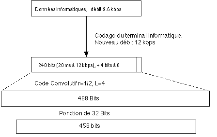
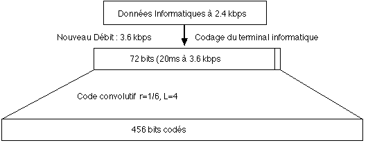
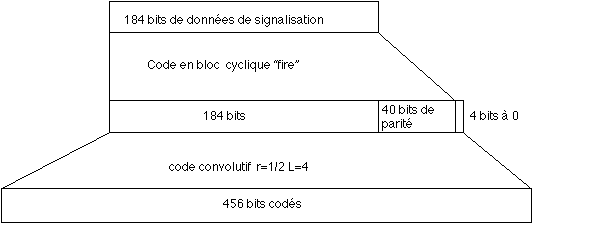

Lorsque l'on transmet des données informatiques, notre droit à l'erreur est beaucoup plus faible qu'avec la parole. En effet perdre un bit sur une séquence de parole n'est pas dramatique. Au pire, il suffit de répéter le son correspondant à la séquence précédente et si ce genre de bévue n'arrrive pas trop souvent, l'utilisateur ne s'en rend même pas compte. Ici, il n'est plus question de faire ce genre de bricolage. Une erreur d'un seul bit peut s'avérer fatal. Les séquences de données informatiques seront donc beaucoup plus protégées contre les erreurs éventuelles.
Chaque type de séquence de données a ses propres paramètres de codage. Nous allons ici présenter les techniques de codage de deux catégories de séquences: Celles correspondant à un débit important (les TCH/F9.6 à 9.6 kbps) et celles de débit faible (les TCH/F2.4 à 2.4 kbps), afin d'avoir une idée des deux solutions extrêmes.
La transmission à 9.6 kbps
Première chose à noter, si 9.6 kbps est le débit "utilisateur", le débit réel de l'appareil est de 12 kbps.Cette augmentation de débit est imposée par l'équipement informatique.Ce n'est pas du codage GSM, mais un codage réalisé par le micro-ordinateur pour protéger les données sur les réseaux informatiques classiques. Nous ne l'aborderons pas ici.
Le flot de données va être coupé en morceaux de 240 bits (parce que 240 bits à 12 kbps prennent exactement 20 ms à être transmis, ce qui est en harmonie avec le codage de parole) qui seront codés à l'aide d'un code convolutif strictement identique à celui utilisé pour coder la parole (i.e un code r=1/2, L=4).Un code convolutif ajoute nécessairemment quatre bits à 0 à la séquence afin d'initialiser le décodeur. Nous aurons donc 244 bits en entrée et 488 en sortie. Hélas ces 488 bits ne s'accordent pas vraiment aux séquences de 456 bits du codage de parole.
Il y a 32 bits de trop !
En fait, on va tout simplement se débarrasser de ces 32 bits qui ne seront jamais transmis. Cet élagage est fait suivant des règles précises qui garantissent que le message arrivera en bonne et due forme malgré tout.
Mais c'est surtout l'entrelacement qui est ici beaucoup plus complexe que pour des données vocales. Ici la séquence de 456 bits sera réparti sur 22 trames de transport, et plus seulement deux. Cet entrelacement est étrangement appelé entrelacement 19 trames. C'est une appellation "historique", qui date d'anciennes spécifications de la norme.
Nos 456 bits vont être découpés de façon complexe: ll y a 16 parties de 24 bits (16x24=384), 2 parties à 18 bits, 2 à 12 bits et 2 à 6 bits. Chaque trame de transport (qui peut transporter 114 bits d'information) contiendra de l'information provenant de 5 ou 6 séquences de données différentes. En substance, 4 parts de 24 bits et, soit une part de 18 bits (96+18=114), soit une part de 12 bits et une part de 6 bits (96+12+6=114).
Les 456 bits d'une même séquence sont distribués de la façon suivante: La première et la vingt-deuxième trame de transport contiennent 6 bits chacun, la seconde et la vingt-et-unième 12 bits, la troisième et la vingtième 18 bits, et les 16 autres 24 bits. La structure se répète ainsi toutes les 4 trames de transport, ce qui garantit un entrelacement tel que chaque trame de transport véhicule des informations de 5 ou 6 séquences de données différentes.

La transmission à 2.4 kbps
Pour simplifier l'implémentation matérielle de la couche physique, le schéma d'entrelacement sera ici le même que pour la parole. Seul change le code convolutif, qui devient ici un code r=1/6, L=4. Les données arrivent du terminal informatique au débit de 3.6 kbps (puisque les données ont déjà été codées pour les protéger des erreurs, indépendamment des considérations propres au GSM. Les données utilisateur sont coupées en blocs de 72 bits ( 72 bits à 3.6 kbps =20 ms), auxquels seront là encore ajoutés 4 bits d'initialisation à 0. Le code convolutif fournit en sortie des séquences de 6x76 bits=456 bits, qui sont entrelacés comme la parole.
Un des avantages de ce débit de transmission est qu'un seul circuit est nécessaire pour transmettre la parole et ce type de données.

Codage des trames de contrôle.
Plus encore que l'information à véhiculer, les séquences de contrôle type BCCH (broadcast control channel),FCCH (frequency correction channel),SCH (synchronisation channel) et autres, doivent être transportés sans dégats. Les séquences de contrôle font toujours 184 bits. Un code en bloc va ajouter 40 bits de parité. Cette séquence de 224 bits sera codée à l'aide d'un code convolutif r=1/2, L=4. On ajoute donc 4 bits à zéro pour l'initialisation, et on multiplie par deux pour obtenir finalement une séquence de 456 bits,comme d'habitude.
Cette séquence sera coupée en 8 sous-blocs et sera entrelacée sur quatre trames de transport: Les quatre premiers sous-blocs sont placés sur les bits pairs des quatre trames de transport, les quatre derniers sous-blocs sour les bits impairs de ces mêmes quatre trames.
